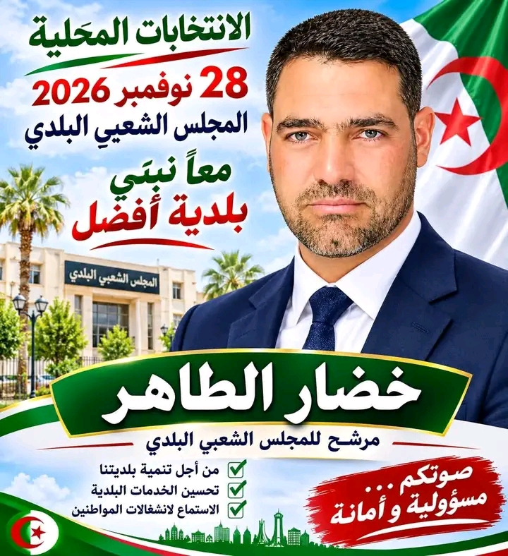

المجلس الشعبي الولائي - تبسة
ولاية تبسة - 12
لأغراض التوعية والتعريف فقط
المجلس الشعبي الولائي - ولاية تبسة
دليل الهيكل التنظيمي
28 مصلحة وملف - اضغط للدخول
📁 الرئيسية
001
أسماء الأعضاء
50 عضو
002
انتخاب الرئيس
26 صوت
003
الدورات والمداولات
4 دورات
004
الميزانية
005
السجلات
14 سجل
006
دليل العضو
من اليوم 1 إلى آخر العهدة
📁 اللجان
007
أعمال اللجان
008
لجنة التنمية والتعمير
009
لجنة التعمير والسكن
010
لجنة التهيئة والبيئة
011
لجنة التجهيز والأشغال
012
لجنة الصحة
013
لجنة التربية والتكوين
014
لجنة الشؤون الاجتماعية
015
لجنة الري والفلاحة
016
لجنة الاتصال والإعلام
📁 الإدارة والمصالح
017
مهام الإدارة
018
المصلحة الإدارية
019
المصلحة المالية
020
مصلحة الديوان
021
مصلحة الإعلام
022
مصلحة الأرشيف
📁 العلاقات والمواطن
023
علاقات الولاية
024
علاقة المجلس بالمجلس الوطني
025
مجلس الأمة
026
أسئلة المواطن الشائعة
027
تبسة - 28 بلدية
12 دائرة
028
متفرقات
10 حوايج مهمين
المجلس الشعبي الولائي - تبسة | القانون 12-07 | 50 عضو